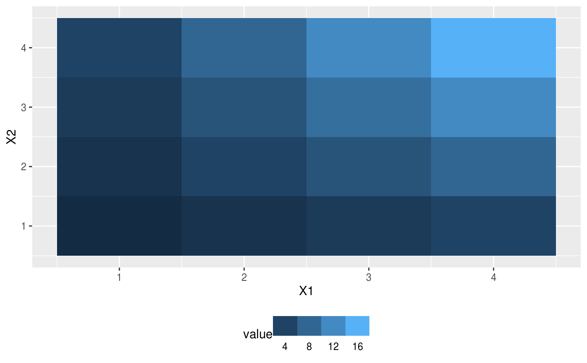

A version of ggplot2::guide_colourbar that displays discretized values and, by default, puts labels in between values.
guide_colourstrip(title = waiver(), title.position = NULL, title.theme = NULL, title.hjust = NULL, title.vjust = NULL, label = TRUE, label.position = NULL, label.theme = NULL, label.hjust = NULL, label.vjust = NULL, barwidth = NULL, barheight = NULL, ticks = FALSE, draw.ulim = TRUE, draw.llim = TRUE, inside = FALSE, direction = NULL, default.unit = "line", reverse = FALSE, order = 0, available_aes = c("colour", "color", "fill"), ...) guide_colorstrip(title = waiver(), title.position = NULL, title.theme = NULL, title.hjust = NULL, title.vjust = NULL, label = TRUE, label.position = NULL, label.theme = NULL, label.hjust = NULL, label.vjust = NULL, barwidth = NULL, barheight = NULL, ticks = FALSE, draw.ulim = TRUE, draw.llim = TRUE, inside = FALSE, direction = NULL, default.unit = "line", reverse = FALSE, order = 0, available_aes = c("colour", "color", "fill"), ...)
Arguments
| title | A character string or expression indicating a title of guide.
If |
|---|---|
| title.position | A character string indicating the position of a title. One of "top" (default for a vertical guide), "bottom", "left" (default for a horizontal guide), or "right." |
| title.theme | A theme object for rendering the title text. Usually the
object of |
| title.hjust | A number specifying horizontal justification of the title text. |
| title.vjust | A number specifying vertical justification of the title text. |
| label | logical. If |
| label.position | A character string indicating the position of a label. One of "top", "bottom" (default for horizontal guide), "left", or "right" (default for vertical guide). |
| label.theme | A theme object for rendering the label text. Usually the
object of |
| label.hjust | A numeric specifying horizontal justification of the label text. |
| label.vjust | A numeric specifying vertical justification of the label text. |
| barwidth | A numeric or a |
| barheight | A numeric or a |
| ticks | A logical specifying if tick marks on the colourbar should be visible. |
| draw.ulim | A logical specifying if the upper limit tick marks should be visible. |
| draw.llim | A logical specifying if the lower limit tick marks should be visible. |
| inside | logical indicating where to position labels (see examples). |
| direction | A character string indicating the direction of the guide. One of "horizontal" or "vertical." |
| default.unit | A character string indicating |
| reverse | logical. If |
| order | positive integer less than 99 that specifies the order of this guide among multiple guides. This controls the order in which multiple guides are displayed, not the contents of the guide itself. If 0 (default), the order is determined by a secret algorithm. |
| available_aes | A vector of character strings listing the aesthetics for which a colourbar can be drawn. |
| ... | ignored. |
Value
A guide object.
Details
The default behaviour works fell for geom_contour_fill in which the colors represent the value between contour surfaces.
`inside = TRUE`` works better for geom_tile where the color represents the value of the data and is very similar to ggplot2::guide_legend.
See also
Other ggplot2 helpers: DivideTimeseries,
MakeBreaks, WrapCircular,
geom_arrow, geom_contour2,
geom_contour_fill,
geom_label_contour,
geom_relief, geom_streamline,
map_labels, reverselog_trans,
scale_divergent,
scale_longitude, stat_na,
stat_subset
Examples
# In this example the lowest color represents an area of the data with values # between 80 and 100. library(ggplot2) binwidth <- 20 data(volcano) ggplot(reshape2::melt(volcano), aes(Var1, Var2, z = value)) + geom_contour_fill(binwidth = binwidth) + scale_fill_continuous(guide = guide_colourstrip(), breaks = MakeBreaks(binwidth))# Difference between guide_legend() and guide_colorbar2(inside = T) df <- reshape2::melt(outer(1:4, 1:4), varnames = c("X1", "X2")) g <- ggplot(df, aes(X1, X2)) + geom_tile(aes(fill = value)) + theme(legend.position = "bottom") # Tick labels are to the side g + scale_fill_continuous(guide = guide_legend())